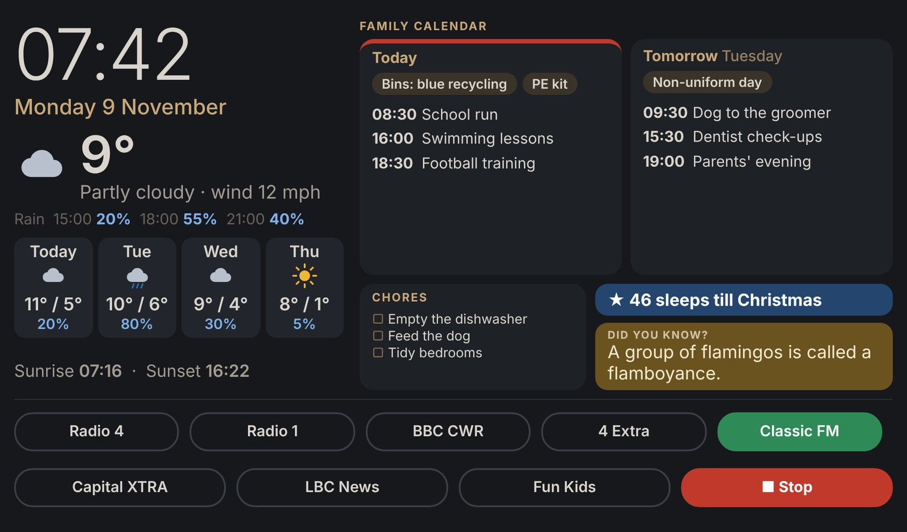
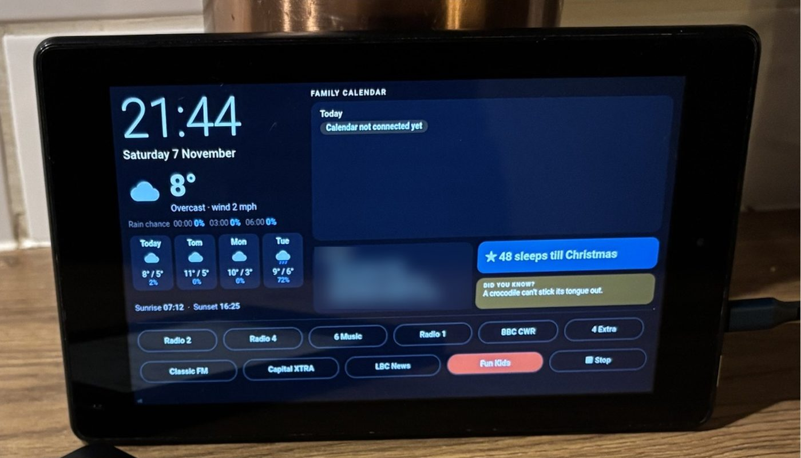
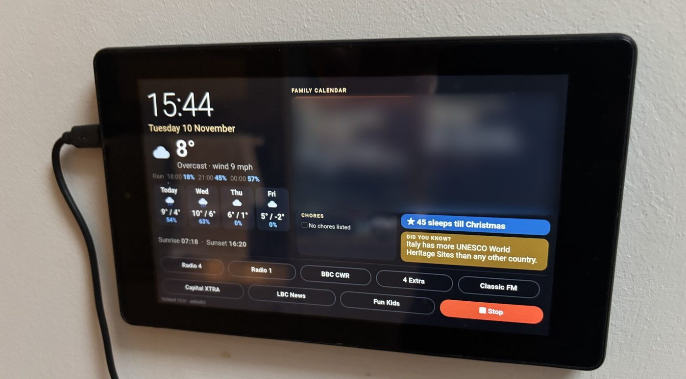
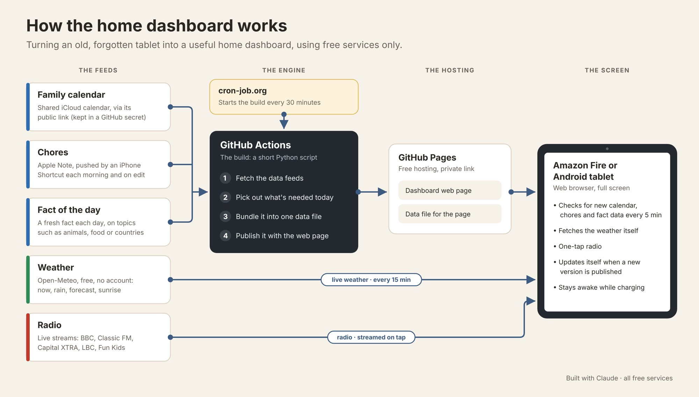

Live weather, the family calendar, chores, a countdown, a fact of the day and one-tap radio, on an Amazon Fire or Android tablet you already own. Built with an AI assistant, using free services only.

Open either link in your tablet's browser, then tap the screen to go full screen.
The home dashboard from this guide, with sample data.
Open the demo → Free to keepA live Grand Prix dashboard that updates itself.
Open the F1 dashboard →Tip: it's phi1 with the number one, not the letter L.
Mine is an Amazon Fire 7 on an older version of Fire OS, and the dashboard was written to suit its older browser.

A colour, touch-screen dashboard that keeps the household on track each morning, built from a tablet you already own. Nothing needs to be bought: everything runs on free services, and the AI assistant writes the code.

The only cost is your time.
An Amazon Fire or Android tablet with a web browser; older models are fine.
Plus its charger: mount it near a socket and Wi-Fi.I used Claude; a paid plan helps on longer sessions.
No coding knowledge needed; the AI guides you.
An iCal (.ics) link, which all the main calendars provide.
iCloud: the owner turns on Public Calendar. Google: on a computer, Settings → Integrate calendar → Secret address in iCal format. Outlook: Settings → Shared calendars → Publish a calendar.Recommended: GitHub's own scheduler ran under 10% of the time in my tests.
Apple Shortcuts, or an Android automation app such as Tasker.
Optional: you can edit the chores list on GitHub instead.Free services gather and prepare everything every 30 minutes, so the tablet only has to show a web page and fetch its own weather. That’s why an old, slow tablet copes perfectly well.

The AI does the building; your job is to decide what you want, carry out the steps it gives you, and tell it what you see.
List what your family needs at a glance in the morning: weather, calendar, chores, radio. Keep version 1 simple.
Paste the starter prompt below, adding your town, your device and your list. Ask it to build a small project you can host for free on GitHub.
Create a free GitHub account and an empty public repository. The AI can explain how to upload its files, or push them for you if it has GitHub access. Turn on GitHub Pages (Settings → Pages → Source: GitHub Actions).
Get your calendar's iCal link and store it as a GitHub secret named as the AI tells you. Never paste it into the code itself.
GitHub's built-in scheduler can be unreliable on new accounts. Set up a free cron-job.org job to trigger an update every 30 minutes; the AI will give you the exact settings.
Open the dashboard link in the browser, tap once to go full screen, and turn on Developer Options → Stay awake so the screen stays on while charging.
Use it for a few days, collect the complaints (text too small, buttons unclear), and ask the AI for one change at a time. Send it a photo of the screen: it can see what's wrong.
Fill in the [square brackets]. Give the AI one job at a time, and paste back any error message word for word.
I want to turn my old tablet into a home dashboard for my family. I'm not a developer, so give me one step at a time and wait for me to confirm each one. The tablet I'd like to use is: [Brand, model and OS version, e.g. Amazon Fire 7, Fire OS 5] I am based in: [Town, country] Our family calendar is in: [iCloud / Google Calendar / Outlook] (I'll add its iCal link to GitHub myself, so don't ask me to paste it here.) Please show on one landscape screen: - A large clock and the date - Current weather, rain chances and a 4-day forecast, from a free weather service with no API key - Today's and tomorrow's events from our family calendar - A chores list, kept in: [Apple Notes / a list I edit on GitHub / leave this out] - A countdown to: [Christmas / a holiday / a birthday] - A fact of the day for children aged [ages], on topics such as: [animals, food, countries] - One-tap buttons for these radio stations: [station names] How it should work: - Host it for free on GitHub Pages - Update the calendar every 30 minutes (use cron-job.org if GitHub's own scheduler is unreliable) - Keep my calendar link in a GitHub secret, never in the code - My tablet's browser may be old, so avoid modern-only web features and test at its screen size - Make the page update itself when a new version is published, without dropping out of full screen I've attached a picture of the look I'm after: [attach an image, or delete this line]
Here's a photo of the dashboard on the tablet. [Describe the change you'd like, e.g. make the weather text bigger / add a countdown to our holiday / the radio buttons run off the bottom.] Change only that, and keep everything else the same.
This step failed. Here's exactly what I did and the exact message I got: [paste]. What's the most likely cause, and what's the single next thing to try?
| Snag | What happened | How to avoid it |
|---|---|---|
| Changes not showing | The tablet kept showing an old copy of the page | The starter prompt asks the AI to make the page update itself. If it still happens, send the AI a photo and say what you expected to see |
| Data went stale | GitHub's schedule didn't run on a new account | Use cron-job.org to trigger updates |
| iPhone Shortcut errors | Menu names differ by iOS version, and variables were typed instead of inserted | Insert variables from the menu (they turn blue); test one action at a time |
| Dropping out of full screen | Page updates reset it | Also covered by the starter prompt; if it happens, tell the AI it drops out of full screen when the page updates |
Your dashboard shows where your family will be and when.
This site is run by Philip Daley, who decides how the information below is used.
I use GoatCounter to count visits. It sets no cookies and doesn't identify you: it records the page, the site that referred you, your browser, screen size and approximate country. Your IP address isn't stored.
The form is hosted by Tally. If you fill it in, I'll use your name, email and answers only to contact you about a done-for-you home dashboard and to judge whether there's enough interest to offer one. I won't sell or share them, and I'll delete them within 12 months if I don't go ahead, or sooner if you ask.
It asks for no personal details. Race data is loaded in your browser from the Jolpica F1 API, which sees your IP address as any website would. It's an unofficial fan page, not affiliated with Formula 1 or the FIA.
You can ask to see, correct or delete what I hold about you by replying to any email I send, or by messaging me on LinkedIn. If you're unhappy with how I've handled your data, you can complain to the Information Commissioner's Office (ico.org.uk).